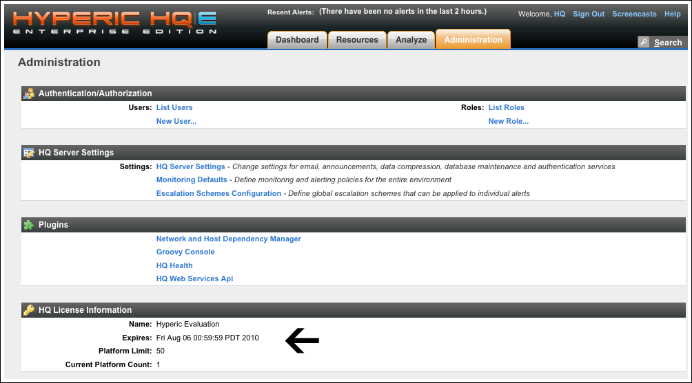

vFabric Hyperic 4.6 : Installing or Configuring a vFabric Hyperic License
This page last changed on Jul 15, 2011 by btalbott@vmware.com.
| If you obtain vFabric Hyperic as part of a vFabric Cloud Application Platform package, refer first to the licensing information and procedure in Getting Started with vFabric Cloud Application Platform. If necessary, complete additional licensing tasks in this document. |
vFabric Hyperic evaluation distributions include a time-limited license for 50 platforms.
After you purchase vFabric Hyperic, a production license specifies the the number of platforms you may manage, and unless you have a perpetual license, the license expiration date.
- If you obtained vFabric Hyperic as a part of vFabric Platform, you have a network license, which is administered by VMware License Server. To activate your license:
- Install the serial number file in <ServerHome/conf, or
- Configure the location of the VMware License Server that administers the network license for vFabric Platform, by adding the vfabric.licenseServer.url property to <ServerHome/conf/hq-server.conf. If Hyperic Server is running on a physical machine, rather than a VM managed by VMware vCenter, you must use this option.
- If you obtained vFabric Hyperic "ala carte", you have a standalone license, which is administered by vFabric Hyperic. You copy the serial number file into <ServerHome/conf
You can view your license terms on the HQ License Details section of the Administration tab, as shown in the screenshot below.
vFabric Hyperic sends an email notification of upcoming expiration starting 45 days prior to the expiration date.
